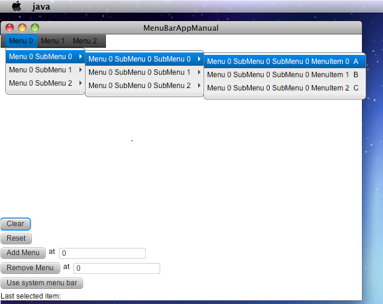

MenuBar Initial State Test
Notion: This test is targeted for testing System menu bar on MacOS. It is implemented, by making standart JavaFX menuBar, switching useSystemMenu option to true/false, to be a system menu bar (grey menu bar on the top of the screen). On other platforms (like windows, and linux), this option shouldn't affect anyhow, so just press "PASS".
This test verifies that MenuBar initaal state of MenuBar is correct for MacOS.
Verify the initial state of MenuBar. It should be placed at the left-top corner of test application and should contains 3 items: "Menu 1", "Menu 2" and "Menu 3" with 3 levels of submenus. MacOS application menu should be empty.
